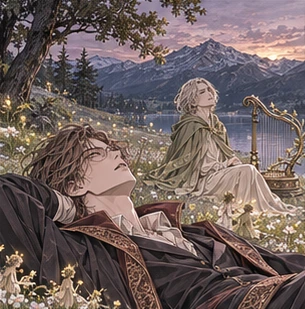
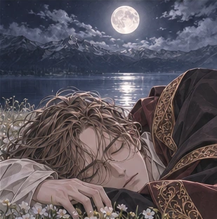
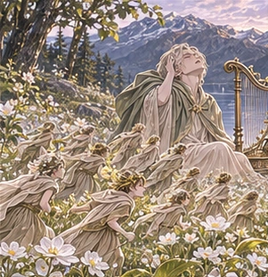
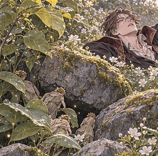
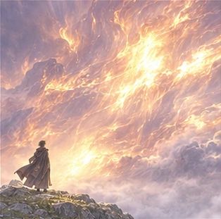

1-1막 · 꽃이 핀 골짜기

꽃이 핀 풀밭에 파우스트가 누워 있었다. 몸은 지칠 대로 지쳤는데 잠은 오지 않았다. 눈을 감아도 얼굴에 들어간 힘이 풀리지 않았다.
그레첸을 감옥에 두고 떠난 뒤 이야기는 이 조용한 골짜기에서 다시 시작됐다. 그사이에 어떤 길을 지나왔는지는 드러나지 않았다. 지금 파우스트에게 필요한 것은 다시 일어날 수 있을 만큼의 휴식이었다.
땅거미가 내려앉자 작은 정령들이 그의 머리맡에 모였다. 그들 곁에는 은빛 머리에 옅은 초록 망토를 두른 아리엘이 있었다. 파우스트를 돌보러 온 정령들을 이끄는 존재였다. 바람에 하프 줄이 울리자 아리엘이 그 소리에 맞춰 노래하기 시작했다.
독일어 원문 · 한국어 번역
1. Akt--Anmutige Gegend
Faust auf blumigen Rasen gebettet, ermüdet, unruhig,
schlafsuchend.
Dämmerung.
Geister-Kreis schwebend bewegt, anmutige kleine Gestalten.
ARIEL.
Gesang von Aolsharfen begleitet.
제1막 · 꽃이 핀 골짜기. 파우스트가 꽃이 핀 풀밭에 누워 있다. 지치고 불안하여 잠을 청한다. 땅거미가 진다. 우아하고 작은 정령들이 허공에서 원을 그리며 움직인다. 아리엘이 바람 하프 소리에 맞춰 노래한다.

아리엘의 노래에는 봄날의 들판이 담겨 있었다. 바람에 흩날리는 꽃잎이 사람들 위로 내려앉고, 풀은 땅 위에 살아 있는 누구에게나 똑같이 푸르게 빛났다.
“꽃잎은 사람을 골라서 떨어지지 않아. 저 푸른 들판도 누구든 볼 수 있지.” 아리엘은 파우스트를 내려다봤다.
독일어 원문 · 한국어 번역
Wenn der Blüten Frühlingsregen
Über alle schwebend sinkt,
Wenn der Felder grüner Segen
Allen Erdgebornen blinkt,봄꽃이 비처럼 모두에게 내려앉고 푸른 들판이 땅에 태어난 모든 이에게 빛날 때,

“우리도 도울 수 있는 곳으로 가는 거야. 좋은 사람이든 나쁜 사람이든, 괴로워하는 모습을 보면 마음이 쓰이니까.”
정령들이 그 말에 귀를 기울였다. 아리엘이 하려는 일은 그가 쉴 수 있게 하는 것이었다. 파우스트가 어떤 사람이든, 지금은 지친 몸으로 잠조차 이루지 못하고 있었다.
독일어 원문 · 한국어 번역
Kleiner Elfen Geistergröße
Eilet, wo sie helfen kann;
Ob er heilig, ob er böse,
Jammert sie der Unglücksmann.
작은 요정들은 너그러운 마음으로 도울 수 있는 곳에 달려간다. 거룩한 사람이든 악한 사람이든, 불행한 이를 가엾게 여긴다.

아리엘은 파우스트의 머리 위를 맴도는 정령들에게 손짓했다.
“여기 있는 너희가 도와줘. 머릿속에서 싸움이 계속되는 것 같아. 마음을 좀 가라앉혀 주자. 자기가 한 일을 떠올릴 때마다 가슴이 찔리는 괴로움도 잠시 내려놓게 해 줘.”
파우스트는 눈을 꼭 감은 채 누워 있었다. 누가 곁에 왔는지 살필 여유조차 없어 보였다.
독일어 원문 · 한국어 번역
Die ihr dies Haupt umschwebt im luft'gen Kreise,
Erzeigt euch hier nach edler Elfen Weise:
Besänftiget des Herzens grimmen Strauß,
Entfernt des Vorwurfs glühend bittre Pfeile,이 머리 위를 공중에서 돌고 있는 너희여, 요정답게 너그러이 행동하여라. 마음속의 거센 싸움을 가라앉히고, 뜨겁고 쓰라린 자책의 화살을 거두어라.

“그가 겪은 끔찍한 일이 계속 떠오르지 않게 해 줘. 밤을 네 때로 나눠서 아침까지 지켜 주는 거야.” 아리엘이 말을 이었다. “우선 머리를 서늘한 데에 받쳐 줘.”
작은 정령들이 풀밭 가까이 내려왔다. 파우스트가 목과 어깨에 주고 있던 힘을 조금씩 뺐다. 지금 당장 일어나 무엇을 해야 한다는 생각에서도 잠깐 벗어날 수 있도록, 정령들은 서두르지 않고 그를 돌봤다.
독일어 원문 · 한국어 번역
Sein Innres reinigt von erlebtem Graus!
Vier sind die Pausen nächtiger Weile;
Nun ohne Säumen füllt sie freundlich aus!
Erst senkt sein Haupt aufs kühle Polster nieder,그가 겪은 끔찍한 일에서 그의 마음을 씻어라. 밤에는 네 차례의 쉼이 있다. 지체하지 말고 그 시간을 다정하게 채워라. 먼저 그의 머리를 서늘한 베개에 내려놓아라.
“이제 레테의 이슬로 씻어 줘.” 아리엘이 말했다. 레테는 그 물을 마시면 지난 기억을 잊는다고 전해지는 강이었다. 여기서는 기억 때문에 괴로워하는 파우스트를 쉬게 해 줄 이슬이었다.
“팔다리가 뻣뻣하게 굳어 있어도 푹 쉬고 나면 다시 움직일 수 있을 거야. 아침을 맞을 힘을 되찾게 해 주자. 그게 우리가 할 일이야.”
꽃잎 끝에서 떨어진 듯한 이슬이 파우스트의 이마에 닿았다.
독일어 원문 · 한국어 번역
Dann badet ihn im Tau aus Lethes Flut!
Gelenk sind bald die krampferstarrten Glieder,
Wenn er gestärkt dem Tag entgegen ruht.
Vollbringt der Elfen schönste Pflicht:그러고 나서 망각의 강 레테에서 가져온 이슬로 그를 씻어라. 기운을 되찾아 날이 밝기까지 쉬고 나면 굳은 팔다리도 곧 부드러워지리라. 요정의 가장 아름다운 의무를 다하여라.

“이 사람이 다시 햇빛 속으로 돌아갈 수 있게.” 아리엘이 마지막 말을 노래에 실었다.
그러자 정령들이 뒤를 이었다. 혼자 부르는 목소리 옆에 다른 목소리가 붙었다. 둘이 함께 부르다가 여럿이 같은 가락을 이어 갔다.
풀밭에는 포근한 바람이 불었다. 꽃향기가 내려앉고 골짜기에는 옅은 안개가 모였다. 정령들의 노래도 그 사이로 부드럽게 퍼졌다.
독일어 원문 · 한국어 번역
Gebt ihn zurück dem heiligen Licht!
CHOR
einzeln, zu zweien und vielen, abwechselnd und gesammelt.
Wenn sich lau die Lüfte füllen
Um den grünumschränkten Plan,
Süße Düfte, Nebelhüllen그를 신성한 빛으로 돌려보내라! 합창. 한 명씩, 둘씩, 여럿이 번갈아 또는 함께 노래한다. 푸른 풀밭 둘레에 포근한 공기가 차오르면, 달콤한 향기와 안개를

저녁 어스름이 풀밭을 덮었다. 정령들은 파우스트가 잠을 깰 만큼 큰 소리를 내지 않고 노래했다.
“이제 편히 쉬어. 어린아이가 안심하고 잠드는 것처럼.”
밤이 되어도 계속 생각하고 후회하느라 쉴 수 없던 사람이었다. 파우스트의 눈꺼풀이 천천히 내려갔다. 얼굴에서 힘이 조금씩 빠졌다.
독일어 원문 · 한국어 번역
Senkt die Dämmerung heran,
Lispelt leise süßen Frieden,
Wiegt das Herz in Kindesruh
Und den Augen dieses Müden저녁 어스름이 내려 보낸다. 달콤한 평화를 속삭이고, 마음을 어린아이처럼 조용히 달래어 지친 이의 눈에

파우스트가 마침내 잠들었다. 눈을 감은 그에게는 낮 동안 보았던 것들이 더 들어오지 않았다. 정령들의 노래는 하루를 그만 끝내도 된다고 달래는 듯했다.
밤하늘에는 별이 하나둘 드러났다. 먼저 눈에 들어온 밝은 별 사이로 작은 별들이 빼곡하게 나타났다.
독일어 원문 · 한국어 번역
Schließt des Tages Pforte zu.
Nacht ist schon hereingesunken,
Schließt sich heilig Stern an Stern;
Große Lichter, kleine Funken낮의 문을 닫아 준다. 밤이 내려앉아 별과 별이 성스레 이어진다. 큰 빛과 작은 불꽃이

어떤 별은 가까운 불꽃처럼 반짝였고, 어떤 별은 멀리서 희미하게 빛났다. 호수에도 그 빛이 비쳤다. 물결이 움직일 때마다 물 위의 별빛이 가늘게 흔들렸다.
파우스트는 그 풍경을 보지 못했다. 그는 깊이 잠들어 있었다. 정령들은 그의 잠이 끊기지 않도록 노래를 이어 갔다.
독일어 원문 · 한국어 번역
Glitzern nah und glänzen fern;
Glitzern hier im See sich spiegelnd,
Glänzen droben klarer Nacht;
Tiefsten Ruhens Glück besiegelnd가까이서 반짝이고 멀리서 빛난다. 호수에 비쳐 반짝이고 맑은 밤하늘에서 빛난다. 가장 깊은 휴식의 평온을 지켜 주며

보름달이 환하게 떠 있었다. 풀밭과 호수, 잠든 파우스트 위로 같은 달빛이 내려왔다.
괴로웠던 시간도, 기뻤던 순간도 지금은 그를 깨우지 못했다. 잠든 동안만큼은 어느 쪽에도 붙들려 있지 않았다.
정령들이 조용히 노래했다. “조금씩 나아질 거야. 다시 기운을 찾을 수 있어.”
독일어 원문 · 한국어 번역
Herrscht des Mondes volle Pracht.
Schon verloschen sind die Stunden,
Hingeschwunden Schmerz und Glück;
Fühl' es vor! Du wirst gesunden;보름달이 환히 빛난다. 지나간 시간은 사그라들고 고통과 기쁨도 자취를 감췄다. 느껴 보라. 너는 회복할 것이다.
“새날이 온다는 걸 믿어 봐.” 정령들의 노래가 이어졌다.
푸른 골짜기 뒤로 언덕이 솟아 있었다. 나무들이 모인 곳에는 그늘이 짙었고, 탁 트인 밭에는 바람이 지나갔다. 밤빛을 받은 곡식 이삭들이 은빛으로 흔들렸다.
독일어 원문 · 한국어 번역
Traue neuem Tagesblick!
Täler grünen, Hügel schwellen,
Buschen sich zu Schattenruh;
Und in schwanken Silberwellen새날의 빛을 믿어라. 골짜기가 푸르고 언덕이 솟아 있으며 숲은 그늘 속에 쉰다. 흔들리는 은빛 물결처럼

이삭은 바람에 쓸렸다가 다시 일어났다. 아직 수확할 때가 되지는 않았지만, 밭의 곡식은 자라고 있었다.
“원하는 게 있다면 저기 밝아 오는 쪽을 봐.” 정령들이 노래했다. “너를 감싼 잠도 이제 가볍게 걷어 낼 수 있어.”
먼 하늘에서 어둠이 조금씩 옅어졌다.
독일어 원문 · 한국어 번역
Wogt die Saat der Ernte zu.
Wunsch um Wünsche zu erlangen
Schaue nach dem Glänze dort!
Leise bist du nur umfangen;곡식이 출렁이며 수확을 향해 무르익는다. 소원을 하나씩 이루고 싶다면 저기 빛나는 곳을 바라보라. 너를 감싼 것은 가볍다.

“잠이라는 껍질을 벗고 일어나. 사람들이 망설이며 돌아다닐 때도 너까지 주저할 필요는 없어.” 정령들의 노래가 파우스트를 깨웠다.
“큰 뜻을 품은 사람이면 해낼 수 있어.” 풀 위에 놓인 파우스트의 손가락이 움직였다. 잠들어 있던 몸에도 조금씩 힘이 돌아왔다.
독일어 원문 · 한국어 번역
Schlaf ist Schale: wirf sie fort!
Säume nicht dich zu erdreisten,
Wenn die Menge zaudernd schweift;
Alles kann der Edle leisten,잠이라는 껍질을 벗어 던져라. 사람들이 망설이며 헤맬 때 과감히 나아가기를 주저하지 마라. 고결한 이는 모든 것을 해낼 수 있다,

“무엇을 해야 할지 알아보고, 기회가 왔을 때 놓치지 않는다면.” 정령들이 노래를 맺었다.
그때 아리엘이 고개를 들었다. 해가 떠오르고 있었다. 사람의 눈에는 빛이 번지는 광경이었지만, 정령들의 귀에는 새날이 태어나는 엄청난 소리가 들렸다.
“들어 봐! 높은 곳에서 몰아치는 저 소리!” 아리엘이 정령들을 불렀다.
독일어 원문 · 한국어 번역
Der versteht und rasch ergreift.
Ungeheures Getöse verkündet das Herannahen der Sonne.
ARIEL.
Horchet! horcht dem Sturm der Hören!
Tönend wird für Geistesohren
Schon der neue Tag geboren.뜻을 알아보고 재빨리 붙잡는 사람이라면. 엄청난 굉음이 해가 가까워 오는 것을 알린다. 아리엘. 들어라, 높은 곳의 폭풍 소리를 들어라! 정령들의 귀에는 새날이 소리와 함께 태어난다.
아리엘에게는 바위로 된 거대한 문이 열리는 듯했다. 덜컹거리는 소리 뒤로 수레바퀴가 요란하게 굴렀다. 태양신 포이보스가 해의 수레를 몰고 오는 것 같은 굉음이었다.
“빛이 저렇게 큰 소리를 내며 오는구나!” 아리엘이 외쳤다. 북을 치고 나팔을 부는 듯한 울림이 골짜기에 가득 찼다.
독일어 원문 · 한국어 번역
Felsentore knarren rasselnd,
Phöbus' Räder rollen prasselnd,
Welch Getöse bringt das Licht!
Es trommetet, es posaunet,바위 문이 요란하게 삐걱이고 태양신 포이보스의 수레바퀴가 요동치며 굴러온다. 빛이 얼마나 큰 굉음을 몰고 오는가! 북과 나팔이 울린다.

정령들은 눈을 깜박이고 몸을 움츠렸다. 소리가 너무 커서 다른 소리를 알아들을 수조차 없었다.
“꽃송이 속으로 들어가!” 아리엘이 손짓했다. “더 깊이 숨어. 거기서 조용히 있어!”
작은 정령들이 꽃잎 사이로 내려갔다. 아리엘도 귀를 가리며 주변을 살폈다.
독일어 원문 · 한국어 번역
Auge blinzt und Ohr erstaunet,
Unerhörtes hört sich nicht.
Schlüpfet zu den Blumenkronen,
Tiefer, tiefer, still zu wohnen,눈은 깜박이고 귀는 놀란다. 너무나 큰 소리는 도리어 들리지 않는다. 꽃송이 속으로 숨어라. 더 깊이, 더 깊이 들어가 조용히 있어라.

“바위틈도 좋아. 잎사귀 아래로! 저 소리를 그대로 맞으면 귀가 멀 거야!” 아리엘의 외침이 이어졌다.
정령들이 숨는 동안 파우스트는 눈을 떴다. 어젯밤과 달리 가슴이 힘차게 뛰었다. 깊게 숨을 들이마셔도 답답하지 않았다. 그는 부드럽게 밝아 오는 하늘을 바라봤다.
독일어 원문 · 한국어 번역
In die Felsen, unters Laub!
Trifft es euch, so seid ihr taub.
FAUST.
Des Lebens Pulse schlagen frisch lebendig,
Ätherische Dämmerung milde zu begrüßen.바위틈으로, 잎사귀 밑으로! 그 소리를 그대로 맞으면 귀가 멀리라. 파우스트. 생명의 맥박이 새롭게 힘차게 뛰며, 맑고 부드러운 여명을 맞이한다.

파우스트는 풀밭에 손바닥을 짚었다. 차갑고 촉촉한 흙이 손에 닿았다. 밤새 자신은 아무것도 하지 못했지만, 땅은 제자리에 있었고 식물들은 아침을 맞고 있었다.
“너는 밤새 그대로 있었구나.” 파우스트가 발밑을 내려다보며 말했다. 주위의 생기를 느끼자 그도 가만히 누워 있고 싶지 않았다. 다시 일어나 살아 보고 싶은 마음이 들었다.
독일어 원문 · 한국어 번역
Du, Erde, warst auch diese Nacht beständig
Und atmest neu erquickt zu meinen Füßen,
Beginnest schon mit Lust mich zu umgeben.
Du regst und rührst ein kräftiges Beschließen,대지여, 너는 이 밤에도 한결같았고, 새로 기운을 얻어 내 발밑에서 숨 쉰다. 너는 벌써 기쁨으로 나를 감싸고, 내 안에 굳은 결심을 일깨운다.

더 높은 삶을 향해 계속 나아가고 싶다는 생각이 파우스트에게 돌아왔다. 그가 원하는 것은 그저 몸을 일으키는 데서 끝나지 않았다.
숲에서는 갖가지 생명이 소리를 냈다. 새벽빛 속에서 나무와 골짜기의 모양이 드러났다. 낮은 곳마다 안개가 길게 누워 있어, 골짜기와 골짜기가 흰 띠로 이어진 것 같았다.
독일어 원문 · 한국어 번역
Zum höchsten Dasein immer fortzustreben.--
In Dämmerschein liegt schon die Welt erschlossen,
Der Wald ertönt von tausendstimmigem Leben,
Tal aus Tal ein ist Nebelstreif ergossen;더 높은 삶을 향해 계속 나아가겠다는 결심을. 여명의 빛 속에 세상이 벌써 열려 있고, 숲은 수많은 생명의 소리로 울린다. 골짜기에서 골짜기로 안개가 띠처럼 퍼진다.

하늘이 맑아지자 빛이 안개 낀 골짜기 깊은 곳까지 내려갔다. 어둠 속에 잠겨 보이지 않던 가지들이 하나씩 모습을 드러냈다.
파우스트의 눈에는 나무들이 이제 막 잠에서 깨어난 것처럼 보였다. 짙은 그늘 안에서 서로 구별되지 않던 잎과 꽃에도 저마다의 색이 돌아왔다.
독일어 원문 · 한국어 번역
Doch senkt sich Himmelsklarheit in die Tiefen,
Und Zweig' und Äste, frisch erquickt, entsprossen
Dem duft'gen Abgrund, wo versenkt sie schliefen.
Auch Färb' an Farbe klärt sich los vom Grunde,그러나 맑은 하늘빛이 골짜기 깊은 곳까지 내려가고, 그 향기로운 깊은 곳에 묻혀 잠들었던 잔가지와 큰 가지가 새 기운을 얻어 돋아난다. 땅에서는 색이 하나씩 또렷해진다.

꽃과 잎에 맺힌 이슬이 잘게 떨렸다. 물방울이 빛을 받다가 아래로 떨어졌다. 파우스트는 눈앞의 풍경을 천천히 둘러봤다. 사방이 생기로 가득해 낙원에 들어온 것 같았다.
“위를 보자.” 그가 고개를 들었다. 거대한 산봉우리들은 벌써 아침빛을 받고 있었다. 골짜기가 어두울 때 저 높은 곳에는 먼저 해가 닿았던 것이다.
독일어 원문 · 한국어 번역
Wo Blunr und Blatt von Zitterperle triefen--
Ein Paradies wird um mich her die Runde.
Hinaufgeschaut!--Der Berge Gipfelriesen
Verkünden schon die feierlichste Stunde;꽃과 잎에는 떨리는 이슬이 맺혀 뚝뚝 떨어지고, 내 둘레는 온통 낙원이 된다. 자, 위를 보라! 거대한 산봉우리들이 가장 장엄한 시간을 알린다.
높은 봉우리부터 시작한 빛이 아래쪽으로 내려왔다. 산비탈의 푸른 풀밭이 밝아지고, 흐릿하던 능선도 또렷해졌다.
파우스트는 그 변화를 따라 시선을 움직였다. 아직 자기 앞까지 오지 않은 빛이 위쪽에서는 벌써 산의 색을 바꾸고 있었다.
독일어 원문 · 한국어 번역
Sie dürfen früh des ewigen Lichts genießen,
Das später sich zu uns hernieder wendet.
Jetzt zu der Alpe grüngesenkten Wiesen
Wird neuer Glanz und Deutlichkeit gespendet,저 높은 곳은 영원한 빛을 먼저 누린다. 그 빛은 뒤이어 우리에게로 내려온다. 이제 높은 산비탈의 푸른 풀밭에도 새 광채가 비쳐 모습이 또렷해진다.
빛은 한 층씩 아래로 내려왔다. 마침내 산 너머에서 해가 모습을 드러냈다.
파우스트는 곧바로 소매를 들어 눈을 가렸다. 조금 전까지 그렇게 보고 싶던 해인데, 막상 똑바로 바라보니 눈이 아팠다. 견뎌 보려던 그는 결국 고개를 돌렸다.
독일어 원문 · 한국어 번역
Und stufenweis herab ist es gelungen--
Sie tritt hervor!--und, leider schon geblendet,
Kehr' ich mich weg, vom Augenschmerz durchdrungen.
빛이 한 층씩 아래로 내려오는 데까지 이르렀다. 드디어 해가 나타난다! 그러나 나는 벌써 눈이 부셔, 눈을 찌르는 통증에 고개를 돌린다.

눈부심을 피하고 나자 파우스트는 자신이 바라는 것들을 떠올렸다. 간절히 원하던 것을 얻기 바로 직전까지 가서, 드디어 길이 열렸다고 느끼는 순간이 있다.
[독백: 파우스트] 문만 열리면 다 괜찮을 줄 알았는데. 막상 그 안을 보게 되면 감당할 수 있을까.
그림 속 환한 문은 그가 떠올린 비유였다. 골짜기에 실제 문이 생긴 것은 아니었다. 눈앞에 열린 기회를 보면서도 빛 때문에 물러서야 했던 지금의 경험이 그에게 그 생각을 하게 했다.
독일어 원문 · 한국어 번역
So ist es also, wenn ein sehnend Hoffen
Dem höchsten Wunsch sich traulich zugerungen,
Erfüllungspforten findet flügeloffen;
Nun aber bricht aus jenen ewigen Gründen간절한 바람이 가장 큰 소원을 향해 가까스로 다가가, 소원이 이루어지는 문이 활짝 열렸을 때도 이와 같다. 그런데 그 영원한 깊은 곳에서

작은 횃불 하나를 켜고 싶었을 뿐인데, 거대한 불바다가 주위를 에워싼다면 어떨까. 파우스트는 바라는 것을 이루는 일도 그와 비슷할 수 있다고 생각했다. 얻고 싶던 힘이 너무 커서 오히려 자신이 버티지 못하는 것이다.
그 뜨거움이 사랑인지 미움인지도 쉽게 가릴 수 없었다. 한쪽으로만 이름 붙이기에는 마음이 너무 거세게 흔들렸다. 그가 떠올리는 불바다는 바로 그 감당하기 어려운 상태였다.
독일어 원문 · 한국어 번역
Ein Flammenübermaß--wir stehn betroffen.
Des Lebens Fackel wollten wir entzünden,
Ein Feuermeer umschlingt uns, welch ein Feuer!
Ist's Lieb', ist's Haß, die glühend uns umwinden,감당 못 할 불길이 터져 나와 우리는 놀라 멈춰 선다. 삶의 횃불을 켜려 했는데 불바다가 우리를 에워싼다. 이 무슨 불길인가! 우리를 뜨겁게 휘감는 것은 사랑인가, 증오인가?

기쁨이 밀려왔다가 고통으로 바뀌고, 고통 속에서 다시 기쁨을 찾게 된다. 그런 일을 겪고 나면 사람은 발밑의 땅을 보며, 싱그러운 풀과 나무 사이로 몸을 피하고 싶어질 수도 있었다.
“그래. 해는 등 뒤에 두자.” 파우스트가 말했다. 그는 눈을 찌르는 빛을 계속 바라보는 대신 몸을 돌렸다. 이제 다른 풍경이 눈앞에 들어왔다.
독일어 원문 · 한국어 번역
Mit Schmerz-und Freuden wechselnd ungeheuer,
So daß wir wieder nach der Erde blicken,
Zu bergen uns in jugendlichstem Schleier?
So bleibe denn die Sonne mir im Rücken!감당하기 어려운 고통과 기쁨이 번갈아 밀려오니, 우리는 다시 땅을 바라보며 그 싱그러운 장막에 몸을 숨기려는 것일까? 그러니 해는 내 등 뒤에 있어라!

바위 절벽 사이로 폭포가 쏟아지고 있었다. 파우스트는 물줄기를 따라 시선을 내렸다. 물이 바위턱에 부딪힐 때마다 천 갈래로 갈라지고, 그 아래에서는 다시 수만 갈래가 되어 흩어졌다.
바위에 가로막힐 때마다 물의 모습이 달라졌다. 파우스트는 그 변화에서 눈을 떼지 못했다. 보기 괴로웠던 태양과 달리, 이 풍경은 볼수록 마음을 끌었다.
독일어 원문 · 한국어 번역
Der Wassersturz, das Felsenriff durchbrausend,
Ihn schau' ich an mit wachsendem Entzücken.
Von Sturz zu Sturze wälzt er jetzt in tausend,
Dann abertausend Strömen sich ergießend,바위 절벽을 가르며 쏟아지는 폭포를 나는 갈수록 기쁘게 바라본다. 물은 단에서 단으로 굴러 천 갈래, 다시 수만 갈래로 나뉘어 쏟아진다.

거센 물줄기가 아래로 떨어지자 물보라가 위로 솟구쳤다. 그 위에 여러 빛깔의 무지개가 나타났다.
파우스트가 바라보는 동안에도 무지개는 그대로 있지 않았다. 선명하게 걸렸다가 물안개가 흩어지면 흐려졌다. 다시 물방울이 빛을 받으면 색이 또렷하게 돌아왔다.
독일어 원문 · 한국어 번역
Hoch in die Lüfte Schaum an Schäume sausend.
Allein wie herrlich diesem Sturm entsprießend.
Wölbt sich des bunten Bogens Wechseldauer,
Bald rein gezeichnet, bald in Luft zerfließend,물보라가 물보라를 타고 높이 솟구친다. 그런데 그 거센 물살 위에서 얼마나 아름답게 피어나는가. 여러 빛깔의 무지개가 걸려, 또렷한 모습을 드러냈다가 허공에 녹아든다.
서늘한 물안개가 둘레로 퍼졌다. 파우스트는 그 속에서 무지개를 계속 바라봤다. 흩어졌다가 다시 모습을 드러내는 빛깔이, 무언가를 이루려고 끊임없이 애쓰는 사람을 닮았다고 느꼈다.
태양 자체를 마주했을 때는 눈이 아파 돌아서야 했다. 그런데 그 빛이 물방울에 비쳐 여러 색으로 나뉘자 오래 바라볼 수 있었다. 그에게는 그것이 살아가는 일과도 닮아 보였다. 바라는 것 전부를 한꺼번에 붙잡으려 하면 감당하기 어렵지만, 눈앞의 세계에서 조금씩 마주하는 모습은 받아들일 수 있었다.
파우스트는 눈을 찌푸리지 않고 폭포를 바라봤다. 해는 여전히 등 뒤에서 빛나고 있었다.
독일어 원문 · 한국어 번역
Umher verbreitend duftig kühle Schauer.
Der spiegelt ab das menschliche Bestreben.
Ihm sinne nach und du begreifst genauer:
Am farbigen Abglanz haben wir das Leben.
무지개는 둘레에 향기롭고 서늘한 물안개를 흩뿌린다. 그것은 인간이 애쓰며 나아가는 모습을 비춘다. 곰곰이 생각하면 더 또렷이 깨달으리라. 우리는 빛이 여러 색으로 비친 곳에서 삶을 얻는다.